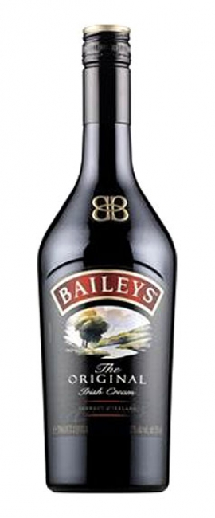

dešra - išsamiai DELFI.lt
 Spalio 29 d., ketvirtadienis | Vilnius 11 Kaunas 10 Klaipėda 10 Šiauliai 9 Panevėžys 10 Alytus 10 Nida 9 Raseiniai 9 Utena 11 Mažeikiai 8 Biržai 10 Kėdainiai 10 Kiti miestai Paieška | Pranešti naujieną | LT RU EN | Reklama Kontaktai | Statistika | + Apie Delfi plius Prisijungti Naujausios Skaitomiausios Lietuvoje Sportas Orai Kriminalai Užsienyje Veidai Horoskopai Gyvenimas Mokslas Verslas Daugiau Sveikata Kultūra Auto M360 Politiko akimis Jaunimas Pilietis Nuomonių ringas Multimedija Teisė Medijos Karas Propaganda PT Melo detektorius Demaskuok Ačiū už pamokas Temos | Delfi VideoNaujienos
Naujausios Skaitomiausios Lietuvoje Sportas Kriminalai Užsienyje Veidai GyvenimasVerslas Mokslas Kultūra Sveikata Auto Pilietis Miestai M360 Politiko akimis
Delfi Video
Tiesioginės transliacijos Delfi Diena Delfi Dėmesio centre LaidosNaudinga
Orai Horoskopai Receptai TV Programa Valiutų kursaiDelfi projektai
Multimedija Idėja Lietuvai Kablys Smalsūs EP Atsakingas požiūris Atgal į gyvenimąDelfi kanalai
Agro Būstas Moterys Šeima Kelionės Grynas Stilius Maistas Letena Karjera Bored Panda Sek DelfiMobilusis Delfi
Naujausios žinios Naujienų temos Delfi Temos dešra
dešra
Dešra – mėsos gaminys.
Pagal gamybos technologiją ir vartojamą žaliavą dešros skirstomos į įdarytas, virtas, dešreles ir sardeles, pusiau rūkytas, rūkytas, arba kietąsias rūkytas, virtas rūkytas, kepenines, kraujo ir mėsos duoną.
Orijus Gasanovas pasidalijo idėja, kaip pajusti Ameriką, neiškėlus kojos iš namų: tą galite kiekvienas + klasikinio mėsainio receptas (25)
Jei bet kurio praeivio gatvėje paklaustume, su kuo jam asocijuojasi amerikietiška virtuvė, neabejotinai atsakymas būtų – mėsainis . Iš tiesų...
Užkalnis: politika yra niekas, gera pica yra viskas (177) 231
Aišku, du dalykai vienas kitam netrukdo. Rinkimų dieną galima balsuoti ir paskui valgyti gerą picą. Arba galima papusryčiauti gera pica, likusia nuo...
Kiaulienos kainos krito, bet ar pirkėjai pajaus: kada bus metas pildyti šaldiklius (27)
Vokietijoje kritusiam šernui nustačius Afrikinio kiaulių maro užkratą rinkos iš karto sureagavo – kiaulienos kainos krito, nes baiminamasi, kad ES...
Šis Alfo receptas jau tapo daugelio pusryčių hitu (3)
Atsibodo rytais valgyti tradicinę kiaušinienę ar pabodusius sumuštinius su sūriu ir dešra? Tuomet skubėkite rašiklio, o dar geriau – šių...
Lenkijos parduotuvėse – neįprastai tuščios lentynos, o lietuvių automobilių aikštelėje nematyti (147) 121
Panašu, kad nuo pirmadienio galiojanti tvarka, kai lietuviams, grįžusiems iš Lenkijos , nereikia saviizoliuotis, užklupo netikėtai tiek apsipirkimo...